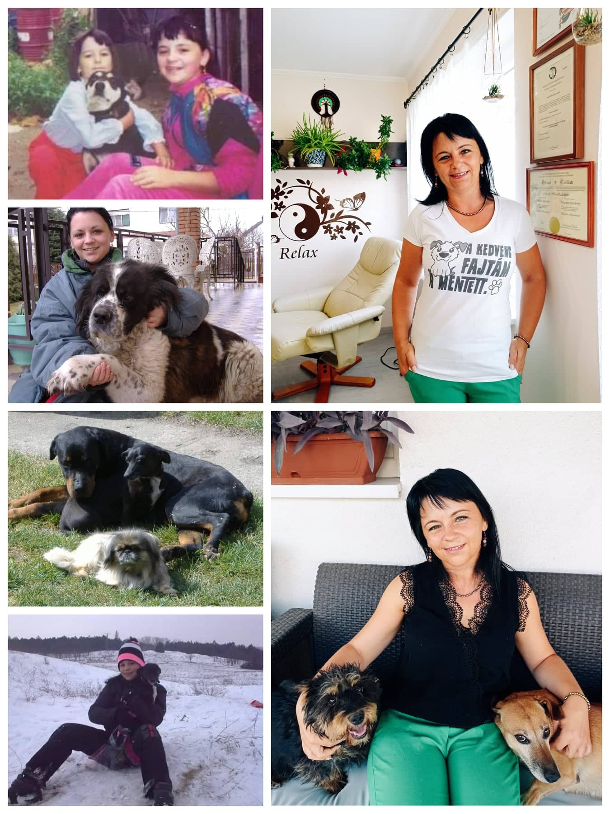
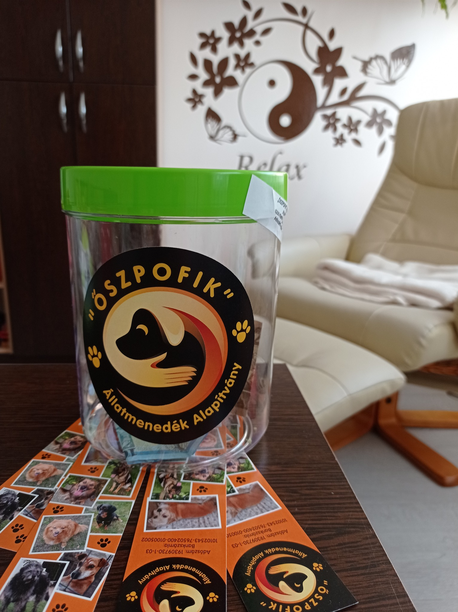

„Egy nemzet nagysága és erkölcsi fejlettsége híven tükröződik abban, ahogyan az állatokkal bánik.
/Mahatma Gandhi/
Segítő szakemberként emberekkel foglalkozok, emellett szívügyem az állatvédelem. Mindig befogadott állataim voltak, kutyáért sosem adtam pénzt. Elvből tettem ezt, egyrészt otthont akartam adni olyan állatoknak, akiknek nem volt más esélyük, másrészt nem akartam a kutyaszaporításból élőket támogatni és az otthontalan állatok számát növelni. Meggyőződésem, hogy egy hánytatott sorsú, ne adj Isten – egy kevésbé divatos – keverék kutyus legalább annyi, ha nem több hálát és szeretetet tud adni, mint pedigrés társai. Nem én választottam a kutyáimat, inkább az élet (sors?) alakította úgy, hogy bekerüljenek az életembe. Így volt nekünk Talpikánk, Lisa babánk, Cicakutyánk, Roni mamánk, Fincsink, Vacakunk, most Sárgink van, keverékek keverékei, de nekem a legszebbek. Valahányszor belenéztem egy-egy nehéz sorsú kutyám szemébe, ugyanazt a félelmet és kiszolgáltatottságot láttam benne, mint az általam kezelt, valamilyen módon bántalmazott, a felnőtt világnak kitett gyerekekében. És ez mindig elkeserít és dühít is egyben, hiszen ezt mi, felnőtt emberek tesszük velük. Ugyanakkor láttam, látom a feltétel nélküli bizalmat és szeretetet is bennük, amit a visszatérő bántalmazás sem tudott kiölni...
A mai gyorsan változó, értékválságban lévő világban nehéz ügy az állatvédelem, alapvetően egyre érzéketlenebbek vagyunk mások problémái iránt, és ha egy állatról van szó, akkor végképp... Éppen ezért társadalmi felelősségünknek tartom, hogy érző, empatikus felnőtteket neveljünk gyerekeinkből, akik nem nézik tétlenül és szenvtelenül ember-, és állattársaik szenvedését, emellett érett, érzelmileg fejlett felnőttként is alapvető kötelességnek érzem az adakozás képességének gyakorlását, hiszen sosem lehetünk annyira szegények, hogy ne tudnánk másokon segíteni akár csak pár forinttal, egy jó szóval, egy gesztussal, egy simogatással…
Mindezek miatt 2023-ban vállaltam, hogy a rendelőmbe kihelyezem az „Őszpofik” Állatmenedék Alapítvány gyűjtőperselyét, rendszeresen hozzájárulva ezzel az alapítvány gondozásában élő állatok orvosi ellátásához és – mivel itt zömében idős/fogyatékkal élő állatok ellátása történik – speciális élelmezéséhez.
A persely kihelyezésekor nem gondoltam volna, hogy az arra adott emberi reakciók mennyire sokszínűek lesznek. Volt olyan, aki örült a kezdeményezésnek és amikor csak tehette – még ha csak néhány forinttal is –, de jószívvel adakozott, volt olyan, aki üdvözölte az ötletet, de anyagilag nem támogatta. Volt olyan is, aki következetesen figyelmen kívül hagyta a perselyt, ami részemről még mindig rendben volt, hiszen tiszteletben tartom az egyéni értékrendet, azonban akadt olyan is, aki kifejezte felém, szerinte ennél „nemesebb” célú alapítványt illene támogatnom…
Én azt gondolom, hogy ezzel egy nemes célt támogatok. A persely kihelyezésénél nemcsak a segíteni akarás szándéka volt bennem, de egyben egy jó alkalomnak gondoltam, hogy a hozzám járó gyerekeket érzékenyítsem az állatok iránti felelősségvállalás és jó gazdiság témakörében. Jó volt látni sok esetben a csillogó gyerekarcokat, a legkisebbektől egészen a legnagyobbakig, akik még nyitott szívvel érdeklődtek a kezdeményezés iránt, többet akartak tudni azokról a kutyusokról, akik az alapítványnál élnek, és nagyon büszke vagyok arra, hogy a gyerekek közül sokan úgy készültek a következő pszichológiai foglalkozásra, hogy a zsebpénzükből dobtak be a perselybe. Nemcsak a pénzgyűjtés volt tehát a célom, hanem az adakozás fogalmával és élményével megismertetni a gyerekeket, ezáltal is fejlesztve az érzelmi intelligenciájukat, hiszen a mai, sok oldalról fenyegetett, egocentrikus, sokszor érzéketlen világban, nagy szükségünk van olyan érzelmileg intelligens, odaadó és önzetlen gyerekekre, akik majd felnőve jobbá tehetik a világot. Szülőként és pszichológusként pedig kötelességemnek érzem továbbra is az érzelmi intelligencia minél szélesebb körű fejlesztését. A szívem egyik csücskében továbbra is a gyerekek maradnak, de a másik felébe minden elesett és gyámolításra szoruló belefér, így az állatok is.
Így tehát a persely továbbra is elérhető a rendelőben, aki fontosnak tartja ezt a kezdeményezést, az adományozásra lehetősége van a helyszínen. A persely tartalmát időnként egy, az Őszpofiknál tett látogatással szoktuk összekötni, ahonnan sok simivel és kutyapuszival feltöltődve, érzelmileg kiegyensúlyozottabban szoktunk távozni.
(Aki szívesen részt venne a következő alkalmon, az nálam jelezheti.)
Aki közvetlenül szeretné az Őszpofik Állatmenedék Alapítványt támogatni, az megteheti az alábbi számlaszámon:
"Őszpofik" Állatmenedék Alapítvány számlaszáma: 10102543-76502400-01005002
Az Alapítvány gondozásában élő állatokról néhány kép